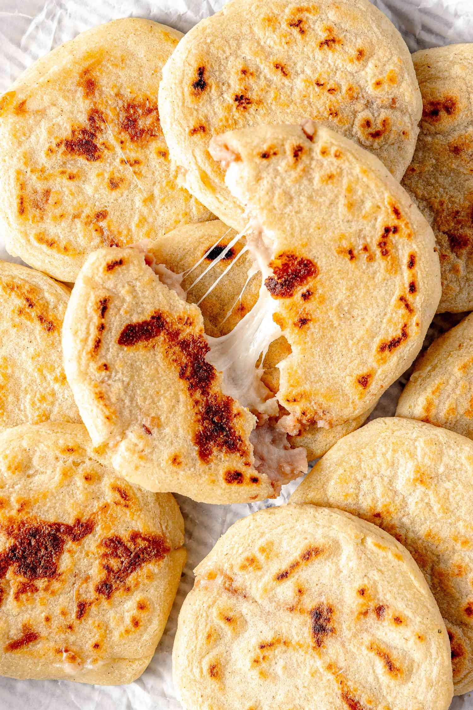

Pupusas
Home

Pupusas are El Salvador's national dish. They consist of thick, handmade
corn or rice dough cakes stuffed with fillings like cheese, refried beans,
and seasoned pork, then grilled until crisp.
Recipes
- 2 cups of corn flour
- 1.5 to 2 cups warm water
- ½ tsp salt
- A little oil or water for greasing hands
Filling (Choose one):
-
1-2 cups shredded cheese (mozzarella, Monterey Jack, or traditional
quesillo)
- 1 cup refried beans
- 1 cup cooked and chopped seasoned pork (chicharrón)
Accompaniments:
-
Curtido: Salvadoran spicy cabbage slaw (shredded cabbage, grated carrot,
minced onion, oregano, and white vinegar)
- Salsa Roja: Blended and simmered tomato salsa
Steps
-
Prepare the Dough:In a large bowl, combine the masa harina and salt.
Gradually mix in the warm water until the dough reaches the consistency
of soft, pliable playdough. Cover with a damp towel and let it rest for
10-15 minutes.
-
Form and Stuff:Rub a little water or oil on your hands so the dough
doesn't stick. Scoop out a golf ball-sized piece of dough and roll it
into a ball. Make an indent in the center with your thumb to create a
small bowl shape. Add about a tablespoon of your desired filling into
the center.
-
Seal and Flatten:Fold the edges of the dough up over the filling to
completely enclose it and roll it back into a smooth ball. Gently
flatten the ball between the palms of your hands into a flat, round disc
about 1\4 to 1\2 inch thick, being careful not
to let the filling leak.
-
Cook:Heat a lightly oiled skillet or griddle over medium-high heat.
Cook the pupusas for 4-5 minutes on each side, or until the dough is
cooked through, slightly crispy, and features golden-brown spots.
- Serve:Serve warm, topped generously with curtido and a drizzle of salsa roja.